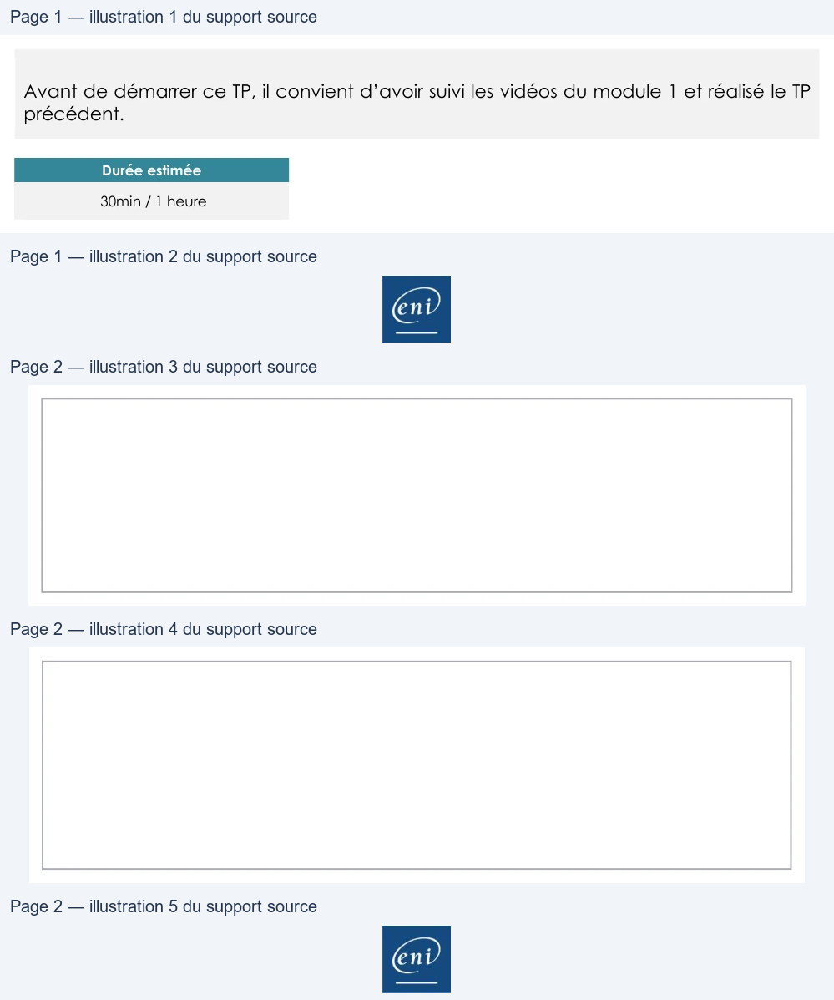

Transcription du document du Drive TSSR. La mise en forme est adaptée au Web ; les compléments IA du portail sont présentés séparément.
Service Réseau en environnement Microsoft
TP du Module 01 – Administration Windows
Avant de démarrer ce TP, il convient d’avoir suivi les vidéos du module 1 et réalisé le TP
précédent.
Durée estimée
30min / 1 heure
Prérequis :
•
Disposer des machines virtuelles installées dans le TP précédent.
•
Modifier la lettre du lecteur CD en « L: »
Ajout de disques au serveur :
Ajouter trois disques SCSI de 10 Go chacun au serveur W19-SRV1.
Besoins de stockage :
En vue de stocker les documents de travail des utilisateurs, créez un volume en RAID-5
pouvant héberger environ 6 Go de données appelé « Données » et accessible depuis le
lecteur D:\
Les membres du service informatique doivent pouvoir accéder à tout moment aux outils
d’administration du système. Créez un volume miroir de 4 Go monté dans C:\INFO-TOOLS
et reposant sur les disques 1 et 3.
Une base de données SQL Server d’une taille maximale de 8 Go sera hébergée sur le
serveur. Créez un volume optimisé pour les performances en lecture/écriture, nommé
Database et accessible via le lecteur E:\
Ces partitions n’hébergeront pas de système d’exploitation.
Page 1/2
© ENI – Tous droits réservés
Service Réseau en environnement Microsoft
Configuration du stockage sur le serveur :
•
Créez les volumes correspondant aux besoins depuis la console de Gestion des
disques.
•
Stockez des fichiers quelconques sur l’ensemble de vos lecteurs.
Simulation de panne :
Depuis les paramètres VMware Workstation, supprimez le disque SCSI n°3 puis observez les
changements dans la console de Gestion des disques.
1. Pouvez-vous accéder aux données stockées sur Données ? □ Oui □ Non
Pourquoi ?
2. Pouvez-vous accéder aux données stockées dans C:\INFO-TOOLS ? □ Oui □ Non
Pourquoi ?
Réparation des volumes défectueux :
•
Ajoutez un disque supplémentaire via les paramètres de la machine virtuelle
VMWare.
•
Retirez le dernier disque pour simuler une panne.
•
Réparez les volumes défectueux depuis la console Gestion des disques.
Page 2/2
© ENI – Tous droits réservés
